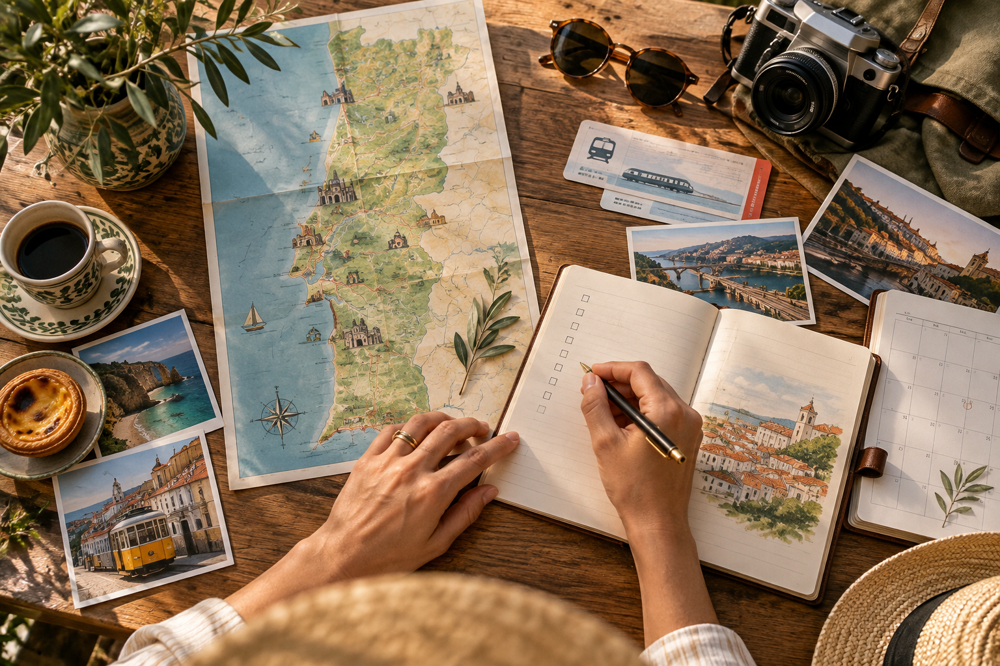
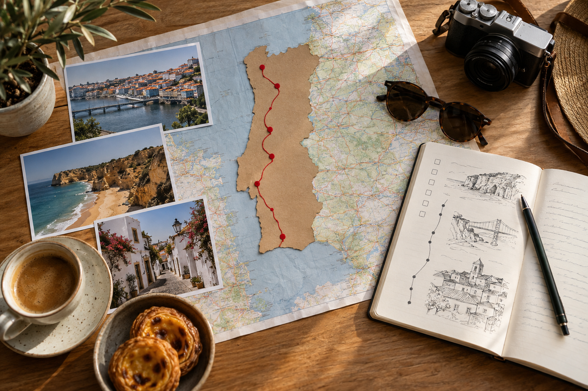
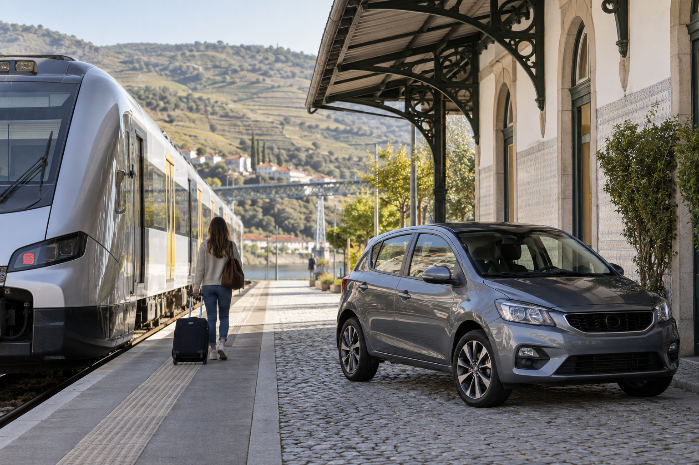

How to Plan a Trip to Portugal: Step-by-Step Guide
Meta Description: Plan a trip to Portugal step by step with tips on routes, flights, trains, hotels, costs, entry rules, packing, and first-time mistakes.
Planning a trip to Portugal often starts with a simple list: Lisbon, Porto, Sintra, the Algarve, and maybe the Douro Valley. Then the difficult questions begin. How many nights should you spend in each place? Should you fly into Lisbon or Porto? Do you need a car? Can you fit the Algarve into one week? And how much time will you lose moving between hotels?
When I review Portugal trip plans for RoamPlans, I find that the hardest part is rarely choosing places worth visiting. Portugal has plenty of them. The real problem is deciding which places fit together within the time you actually have. A route that looks easy on a map can become tiring once you add flights, hotel changes, train times, day trips, luggage, and arrival days.
That is why I plan Portugal in a fixed order. I start with trip length and travel style before choosing hotels or booking attractions. This step-by-step guide follows that same process, so you can build a Portugal trip around your time, budget, and interests without trying to fit the whole country into one vacation.
Quick Answer: How Do You Plan a Trip to Portugal?

Start with your number of usable days. Then choose the type of Portugal trip you want, decide when to travel, set a realistic budget, and select two or three main bases.
After that, compare flights, decide how you will move between destinations, book accommodation, reserve important transport and attractions, and leave some free time in your schedule.
A good planning order looks like this:
| Step | What to Decide |
|---|---|
| 1 | How many days you actually have |
| 2 | What type of Portugal trip you want |
| 3 | When you want to visit |
| 4 | Your realistic trip budget |
| 5 | Which regions and cities fit |
| 6 | Your route and travel direction |
| 7 | Arrival and departure airports |
| 8 | Train, bus, rental car, or mixed transport |
| 9 | Where to stay |
| 10 | What needs advance booking |
| 11 | Documents, money, phone, and packing |
| 12 | Final itinerary check |
Do these steps in order.
Booking hotels first and building the route later is one of the easiest ways to create unnecessary backtracking.
Step 1: Decide How Many Days You Really Have
Before choosing Lisbon, Porto, or the Algarve, count your usable travel days.
This is different from counting nights.
Suppose you book an eight-night Portugal vacation from the United States.
Your schedule might include:
- ✓An overnight flight to Europe
- ✓Arrival in Portugal during the morning or afternoon
- ✓Hotel check-in
- ✓Several intercity travel days
- ✓An early airport departure on the final day
Your eight-night trip may therefore contain only six or seven strong sightseeing days.
This difference matters.
If you plan as though every calendar day is completely available, your route may already be too busy before you arrive.
Use Nights First, Attractions Second
Start by writing down:
Arrival date:Departure date:Total nights:Full days:Possible transfer days:
Then start building the route.
Do not begin by listing 30 attractions.
What Different Trip Lengths Can Handle
Use this as a starting framework:
| Time Available | Planning Approach |
|---|---|
| 3–4 days | Choose one main city or region |
| 5 days | Keep the trip to one or two main bases |
| 7 days | Two strong bases plus a day trip |
| 10 days | Two or three bases with more regional variety |
| 14 days | Several regions at a more comfortable pace |
| 2+ weeks | Add smaller towns or slower regional stays |
These are not fixed itineraries.
The purpose of this table is to stop you from planning a 14-day route inside a 7-day vacation.
A 7-Day Example
A first-time traveler might initially choose:
Lisbon → Sintra → Coimbra → Porto → Douro Valley → Algarve
All of these places are worth considering.
But seven days is not enough to experience them all at a comfortable pace.
A cleaner plan could be:
Lisbon: 4 nights
Use one day for Sintra.
Then:
Porto: 3 nights
Use one of those days for the Douro Valley if it is a high priority.
You now have fewer hotel changes and more usable time.
Our separate How Many Days in Portugal Do You Need? guide will cover trip length in more detail.
Step 2: Decide What Type of Portugal Trip You Want
Do not choose destinations simply because they appear on every Portugal travel list.
Choose them because they match your interests.
This is one of the biggest differences between an average itinerary and a useful one.
Ask yourself:
What do I actually want from Portugal?
If You Want Cities and History
Build the trip around:
- ✓Lisbon
- ✓Porto
- ✓Sintra
This works particularly well for a first visit.
You can explore historic neighborhoods, viewpoints, palaces, churches, food, museums, and riverside areas without needing a rental car for most of the trip.
If You Want Beaches
Give the Algarve a larger share of your schedule.
Do not add it as a rushed one-night stop at the end of a city-heavy itinerary.
A beach-focused route may look more like:
Lisbon → Algarve
rather than:
Lisbon → Porto → Douro → Coimbra → Algarve
If You Want Food and Wine
Lisbon and Porto both fit well.
The Douro Valley becomes more valuable if vineyards, wine, scenery, and slower regional experiences are high on your list.
If You Want a Road Trip
A rental car becomes more useful once you move beyond the main city centers.
You can consider:
- ✓Smaller towns
- ✓Rural areas
- ✓Coastal stops
- ✓Alentejo
- ✓Central Portugal
- ✓Parts of the Algarve
You still may not need a car during your Lisbon and Porto stays.
If You Want a Relaxed First Trip
Choose fewer bases.
A relaxed Portugal trip might include only:
Lisbon + Sintra + Porto
Seven to ten days across those places can still create a full vacation.
You do not need to cross the entire country for the trip to feel complete.
Match Your Travel Style to the Right Places
This table can help narrow your options.
| Your Priority | Places to Consider |
|---|---|
| Historic cities | Lisbon, Porto |
| Palaces and estates | Sintra |
| Wine and river scenery | Douro Valley |
| Beaches and cliffs | Algarve |
| Smaller historic cities | Coimbra, Évora |
| Food and city culture | Lisbon, Porto |
| No-car travel | Lisbon, Sintra, Porto |
| Road trip | Central Portugal, Alentejo, Algarve |
| Slow travel | Fewer bases with longer stays |
| Coastal vacation | Algarve and western coast |
Do not treat this table as a checklist.
Choose the rows that match you.
Step 3: Choose When You Want to Visit Portugal

Your travel dates affect more than the weather.
They can change:
- ✓Hotel prices
- ✓Flight prices
- ✓Crowds
- ✓Beach conditions
- ✓Daylight
- ✓Restaurant availability
- ✓Driving conditions
- ✓What you need to pack
That means your travel month should be decided early.
Spring
Spring can work well for sightseeing and city trips.
Temperatures are often more comfortable for walking than during the hottest summer periods.
Weather can still change, especially farther north.
Summer
Summer suits travelers who want beaches, longer days, and warm weather.
It can also bring higher demand in popular destinations.
If your trip includes the Algarve during a busy period, accommodation deserves early attention.
Fall
Early fall can combine warm weather with city sightseeing, coastal time, and wine-region visits.
Conditions change as the season moves closer to winter.
Winter
Winter can suit travelers who care more about cities, food, culture, and quieter travel than beach time.
Northern Portugal may be cooler and wetter.
The Algarve can feel very different from Porto during the same week.
Do Not Pick Your Dates From Temperature Alone
Think about what you plan to do.
A traveler who wants to walk around Lisbon and Porto all day may prefer different conditions from someone planning five beach days in the Algarve.
A wine-focused Douro trip also has different seasonal priorities from a Lisbon city break.
Our dedicated Best Time to Visit Portugal article will compare the seasons and months more closely.
Step 4: Set Your Portugal Budget Before Booking
You do not need an exact dollar amount before planning.
You do need a realistic spending range.
Start with five main categories:
- ✓Flights
- ✓Accommodation
- ✓Transportation
- ✓Food
- ✓Activities
Then add a buffer for small costs.
Start With the Costs You Cannot Easily Change
Flights and accommodation often take a large share of the trip budget.
Compare these before spending hours choosing restaurants or attractions.
Ask:
- ✓Can I travel one week earlier or later?
- ✓Is a different arrival airport better?
- ✓Would fewer hotel changes save money?
- ✓Do I really need a rental car?
- ✓Do I need a car for the full trip?
- ✓Is central accommodation worth paying more for?
Sometimes paying more for a better hotel location can reduce transport costs and save time.
Think in Total Trip Cost, Not Hotel Price
Consider two hotels.
Hotel A: cheaper but far from the places you plan to visit.
Hotel B: slightly more expensive but close to public transport and sightseeing.
Hotel A may look better during booking.
But after adding taxis, extra transport, and travel time, the difference can become much smaller.
The same rule applies to flights.
A cheaper return flight from Lisbon might require you to travel all the way back from Porto.
An open-jaw flight could cost more but save a transfer and possibly a hotel night.
Look at the full trip.
Give Yourself a Buffer
Not every expense can be planned exactly.
Keep room for:
- ✓Extra meals
- ✓Local transportation
- ✓Attraction tickets
- ✓Luggage storage
- ✓Small purchases
- ✓A taxi when you are tired
- ✓A restaurant you did not plan
- ✓Last-minute changes
A budget with no spare room can make small changes stressful.
Our separate Portugal Trip Cost guide will cover spending levels and trip-length budgets in more detail.
Step 5: Choose Your Portugal Destinations
Now you can start choosing places.
Notice how late this step appears.
By this point, you already know:
- ✓Your available days
- ✓Your travel style
- ✓Your season
- ✓Your approximate budget
This makes destination selection much easier.
Start With One or Two Main Bases
For most first-time mainland Portugal trips, Lisbon and Porto are the easiest places to start.
Then add other destinations around them.
Lisbon as a Base
Lisbon can cover:
- ✓Lisbon sightseeing
- ✓Food
- ✓Museums
- ✓Historic neighborhoods
- ✓Riverfront areas
- ✓Sintra as a day trip
That means you do not need a separate hotel every time you leave Lisbon for the day.
Porto as a Base
Porto can cover:
- ✓Porto sightseeing
- ✓Riverside areas
- ✓Food
- ✓Wine experiences
- ✓Douro Valley day trips
Again, one hotel can support several different experiences.
Algarve as a Base
The Algarve works differently.
It is a large region.
You must first choose which part of it fits your plans.
Your Algarve base may depend on:
- ✓Beaches
- ✓Nightlife
- ✓Public transport
- ✓Car access
- ✓Quiet surroundings
- ✓Coastal walks
- ✓Family needs
Do not simply book the first hotel you find with Algarve in its description.
Check its exact location.
Should You Add Sintra?
For most first-time Lisbon trips, Sintra is an easy destination to consider.
The key planning decision is whether to stay overnight.
Many travelers can visit from Lisbon and return to the same hotel.
This keeps your route simpler.
An overnight stay can make sense if Sintra itself is a major part of your trip or you prefer a slower visit.
For most short first trips, however, it can work well as a day trip.
Should You Add the Douro Valley?
Think about your priorities.
Add the Douro Valley if:
- ✓Wine interests you
- ✓Scenic countryside matters
- ✓You have enough time in Porto
- ✓You want a break from city sightseeing
Skip it on a short trip if adding it means losing too much time from Lisbon or Porto.
A famous place does not automatically belong in your itinerary.
Should You Add the Algarve?
The Algarve needs more time than many first-time visitors expect.
It is not a quick attraction outside Lisbon.
Adding it means traveling south and choosing another base.
I would ask three questions:
Do beaches matter enough to remove time from another destination?
Do you have enough nights to stay more than briefly?
Does the transport time make sense within your route?
If the answers are yes, include it.
If not, save southern Portugal for another trip.
Should You Add Coimbra or Évora?
Smaller cities can make a longer Portugal trip more interesting.
But they should not be added only because you see empty space between Lisbon and Porto on a map.
They work better when you have enough time to slow down.
For a first trip of one week, I would usually protect Lisbon and Porto before adding several smaller overnight stops.
With 10 to 14 days, your options become much wider.
Build a Must-See, Nice-to-See, and Skip List
This is one of the planning methods I use when a route contains too many stops.
Make three columns.
Must See
Places you would regret missing.
For example:
- ✓Lisbon
- ✓Porto
- ✓Sintra
Nice to See
Places you want to visit if the schedule supports them.
For example:
- ✓Douro Valley
- ✓Coimbra
- ✓Évora
Save for Another Trip
Places that would make this route too busy.
For example:
- ✓Algarve
- ✓Madeira
- ✓Azores
Your actual list may be completely different.
The point is to accept that not everything needs to fit.
Once you do this, building the route becomes much easier.
Do Not Mix Mainland Portugal, Madeira, and the Azores Without Enough Time
Portugal includes mainland destinations as well as the Madeira and Azores island groups.
They should not automatically be treated as nearby add-ons.
Adding islands normally introduces another flight and another section of the trip.
If you have limited time, choose mainland Portugal or make one of the island regions a main focus.
With a longer vacation, combining them can make more sense.
Step 6: Put Your Destinations in the Right Order
Once you know where you want to go, look at geography.
You want the route to move logically rather than repeatedly returning to the same city.
For example:
Porto → Lisbon → Algarve
has a clear direction.
A route such as:
Lisbon → Porto → Algarve → Lisbon
may still work, but you should ask why you need to return to Lisbon.
Sometimes the answer is your flight.
That is fine.
But check whether another arrival or departure airport could remove that final transfer.
Look for Backtracking
Write your route on one line.
For example:
Lisbon → Sintra → Lisbon → Porto → Lisbon → Algarve → Lisbon
Now ask:
Why am I returning to Lisbon so many times?
Sintra as a Lisbon day trip makes sense.
Returning from Porto to Lisbon before continuing elsewhere may not.
This simple exercise often exposes route problems immediately.
Keep Day Trips Attached to a Base
Think of the route as main bases with smaller branches.
For example:
Lisbon
→ Sintra day trip
Porto
→ Douro Valley day trip
This structure is easier than treating every place as a new overnight destination.
It also reduces:
- ✓Packing
- ✓Hotel check-outs
- ✓Luggage storage
- ✓Station transfers
- ✓Lost sightseeing time
Your Route Should Pass the Three-Question Test
Before you keep any destination, ask:
1. Why am I going there?
There should be a clear reason.
2. How much usable time will I have there?
Do not count arrival at 7:00 p.m. as a full day.
3. What does adding it cost me?
The cost may be:
- ✓Money
- ✓Train time
- ✓Driving time
- ✓Another hotel change
- ✓A shorter stay somewhere else
If the destination still feels worth it after answering all three questions, keep it.
If not, remove it.
First Planning Checkpoint
At this stage, you should know:
- ✓Total nights
- ✓Full usable days
- ✓Travel style
- ✓Approximate season
- ✓Approximate budget
- ✓Main destinations
- ✓Main bases
- ✓Possible day trips
- ✓Rough travel direction
Do not book every attraction yet.
Your next job is to make sure the route works in the real world.
That means comparing airports, transport, travel times, accommodation areas, and the order in which you should book everything.
Step 7: Choose the Right Airport for Your Portugal Trip
Once your route is clear, compare the airports that fit it.
For mainland Portugal, most first-time travelers will look at:
- ✓Lisbon Airport (LIS)
- ✓Porto Airport (OPO)
- ✓Faro Airport (FAO)
The best airport is not always the one with the cheapest flight.
It should also fit the direction of your trip.
Flying Into Lisbon Airport
Lisbon is the easiest starting point for many first-time Portugal trips.
It makes sense if your route begins with:
- ✓Lisbon
- ✓Sintra
- ✓Central Portugal
- ✓Algarve
Lisbon also works well if you are planning a simple Lisbon and Porto trip.
For example:
USA → Lisbon → Porto → USA
or:
USA → Lisbon → Porto → Lisbon → USA
The second route works, but it creates extra travel at the end.
That is why I always compare more than one flight structure before booking.
Flying Into Porto Airport
Porto can be a smart starting point if your route moves south.
For example:
USA → Porto → Lisbon → Algarve
Starting in Porto can remove the need to travel north after landing in Lisbon.
It can also work well if the Douro Valley is one of your main priorities.
Do not assume Lisbon must always be your first city.
Look at the full route first.
Flying Into Faro Airport
Faro Airport is the main airport for the Algarve.
It can make sense if:
- ✓The Algarve is your main destination
- ✓You want to start in southern Portugal
- ✓Your route moves north afterward
- ✓You want to finish your trip near the beaches
For example:
USA → Faro → Lisbon → Porto
This can work if airfare and flight connections are practical.
Round Trip or Open-Jaw Flight?
This is one of the most useful flight decisions in Portugal planning.
A round-trip flight uses the same main airport for arrival and departure.
Example:
USA → Lisbon → USA
An open-jaw trip uses different airports.
Example:
USA → Porto
then:
Lisbon → USA
The open-jaw option can save time because you do not have to return to your starting city.
Compare the Full Cost
Do not compare airfare alone.
Also consider:
- ✓Extra train tickets
- ✓Hotel nights
- ✓Airport transfers
- ✓Time spent backtracking
- ✓Early departures
- ✓Luggage movement
Imagine two options.
Option A: Round-trip Lisbon flight saves $80.
But you finish your trip in Porto and need to return to Lisbon.
Option B: Fly into Porto and home from Lisbon.
Option B may cost slightly more, but it could save several hours of travel.
That can be worth more than the airfare difference.
A Simple Airport Decision Table
| Your Route | Airport Setup to Compare |
|---|---|
| Lisbon only | Round trip Lisbon |
| Lisbon + Porto | Lisbon round trip vs Lisbon/Porto open-jaw |
| Porto → Lisbon | Arrive Porto, leave Lisbon |
| Lisbon → Porto | Arrive Lisbon, leave Porto |
| Algarve-focused trip | Faro round trip |
| Lisbon + Algarve | Lisbon/Faro open-jaw |
| Porto + Lisbon + Algarve | Porto/Faro open-jaw |
Always compare several combinations before paying.
Step 8: Decide How You Will Travel Around Portugal

Once flights are chosen, plan transport between each base.
Portugal gives first-time travelers several choices:
- ✓Train
- ✓Bus
- ✓Rental car
- ✓Local public transport
- ✓Taxi or ride service
- ✓Organized day trip
You do not need to choose one transport type for the entire vacation.
A mixed approach is often better.
For example:
Train between Lisbon and Porto
then:
Rental car for part of the Algarve
This avoids city driving while still giving you freedom in coastal areas.
When Trains Make Sense
Train travel works especially well between major cities.
For first-time travelers, trains can be a good choice for routes such as:
- ✓Lisbon to Porto
- ✓Lisbon to Sintra
- ✓Lisbon to Coimbra
- ✓Porto to parts of the Douro region
- ✓Some Algarve routes
Train travel also removes several road-trip problems.
You do not need to think about:
- ✓Parking
- ✓Fuel
- ✓Road signs
- ✓City traffic
- ✓Car rental deposits
- ✓Toll systems
You can arrive in the city center and continue by local transport.
When Buses Make Sense
Buses can fill gaps where train connections are less convenient.
They may also:
- ✓Reach towns without direct train service
- ✓Offer useful departure times
- ✓Cost less on some routes
- ✓Connect cities directly
Do not choose a bus simply because the ticket price is lower.
Compare the total travel time and the station location.
A cheaper ticket can be less useful if the route takes much longer.
When You Need a Rental Car
A car becomes more useful when your itinerary includes:
- ✓Rural Portugal
- ✓Small towns
- ✓Remote beaches
- ✓Multiple countryside stops
- ✓Parts of the Algarve
- ✓Flexible road trips
- ✓Areas with limited public transport
A car can give you freedom to stop where you want.
But it also creates extra work.
You must think about:
- ✓Parking
- ✓Tolls
- ✓Fuel
- ✓Insurance
- ✓Narrow roads
- ✓Manual vs automatic transmission
- ✓Pickup and drop-off times
That is why I would not rent one automatically.
Do You Need a Car in Lisbon?
For most first-time visitors, no.
Lisbon has public transport, taxis, walking routes, and local rail connections.
Driving in the city can add:
- ✓Parking problems
- ✓Traffic
- ✓Narrow streets
- ✓Extra costs
If you are renting a car for another part of the trip, consider picking it up after your Lisbon stay.
Do You Need a Car in Porto?
Again, most first-time city visitors do not need one.
Central Porto is compact.
A car can become useful if Porto is the start of a wider regional road trip.
Otherwise, city parking and steep streets can make it more trouble than help.
Train vs Rental Car: Quick Decision Table
| Trip Section | Good Choice for Many First-Timers |
|---|---|
| Lisbon city | Walk + public transport |
| Lisbon → Sintra | Train |
| Lisbon → Porto | Train |
| Porto city | Walk + public transport |
| Porto → Douro | Train, tour, or car |
| Algarve town stay | Public transport may work |
| Wider Algarve exploring | Car can help |
| Rural villages | Car |
| Multi-stop countryside trip | Car |
The right answer depends on your route.
Think About Luggage Before Choosing Transport
Luggage affects travel more than many people expect.
Large bags make:
- ✓Train boarding harder
- ✓Station stairs harder
- ✓Hotel changes slower
- ✓Cobbled streets more difficult
- ✓Short transfers less comfortable
If you are moving between several cities, pack with transport in mind.
A bag that feels manageable at the airport may feel very different after carrying it through a station and up a steep street.
Step 9: Choose Where to Stay
Accommodation should come after your route and transport plan.
By this point you know:
- ✓Where you are going
- ✓How long you will stay
- ✓How you will arrive
- ✓How you will leave
Now you can choose an area that fits your trip.
Do Not Choose a Hotel by Price Alone
The cheapest hotel may not give the lowest total trip cost.
Look at:
- ✓Distance from attractions
- ✓Public transport
- ✓Walking conditions
- ✓Station access
- ✓Noise
- ✓Food nearby
- ✓Luggage access
A hotel that saves $20 per night but requires long taxi rides may not be a better deal.
Where to Stay in Lisbon
For first-time visitors, central areas often make sightseeing easier.
Common options include:
Baixa
Good for:
- ✓Central location
- ✓Easy sightseeing
- ✓Shops
- ✓Restaurants
- ✓Public transport
It can suit travelers who want convenience.
Chiado
Good for:
- ✓Central access
- ✓Cafés
- ✓Shopping
- ✓Easy walking to several areas
It can work well for first-time visitors who want to stay close to the action.
Alfama
Good for:
- ✓Historic atmosphere
- ✓Narrow streets
- ✓Traditional city feel
But it may be harder if you have:
- ✓Heavy luggage
- ✓Limited mobility
- ✓Problems with hills
Bairro Alto
Good for:
- ✓Nightlife
- ✓Restaurants
- ✓Evening energy
Check recent guest comments about noise before booking.
Where to Stay in Porto
Porto also has several useful areas.
Baixa
Good for:
- ✓First-time sightseeing
- ✓Restaurants
- ✓City access
- ✓Walking to major areas
Ribeira
Good for:
- ✓River views
- ✓Historic feel
- ✓Easy access to the waterfront
The main concern is hills.
Walking back from the river can involve a steep climb.
Cedofeita
Good for:
- ✓Cafés
- ✓Restaurants
- ✓A slightly calmer feel
- ✓Access to the central city
Your exact location still matters.
Where to Stay in the Algarve
The Algarve requires a different approach.
It is a region, not one city.
Common bases offer different experiences.
Lagos
Good for travelers interested in:
- ✓Beaches
- ✓Coastal scenery
- ✓Cliffs
- ✓Boat trips
- ✓Walkable town areas
Faro
Good for:
- ✓Airport access
- ✓Public transport
- ✓Shorter stays
- ✓A city base
Tavira
Good for:
- ✓Slower travel
- ✓Historic streets
- ✓Quieter atmosphere
Albufeira
Good for:
- ✓Resorts
- ✓Nightlife
- ✓Busy beach areas
Your best base depends on your travel style.
Check the Hotel Before Booking
Before paying, check:
Location
Open the map and look at the surrounding area.
Walking Route
A hotel 600 meters away may still involve a steep hill.
Transport
Check how you will reach the hotel from the airport or station.
Reviews
Read recent comments about:
- ✓Noise
- ✓Cleanliness
- ✓Air conditioning
- ✓Elevators
- ✓Street access
- ✓Construction
Cancellation Terms
Plans can change.
Know what you can cancel and when.
Check-In Time
If your flight lands early, your room may not be ready.
Check whether the hotel offers luggage storage.
Step 10: Book the Main Parts in the Right Order
One of the easiest ways to make trip planning confusing is booking things in random order.
I prefer a fixed booking sequence.
1. Confirm Your Dates
Make sure your travel dates work with:
- ✓Work
- ✓School
- ✓Family plans
- ✓Passport validity
- ✓Flight availability
2. Book International Flights
Once your dates and route direction are clear, compare the main airport combinations.
Do not book first and decide the route afterward unless the flight price is the main reason for the trip.
3. Book Main Accommodation
Reserve your main bases.
For example:
Lisbon
Porto
Algarve
Do not book every one-night stop before deciding whether you actually need it.
4. Plan Intercity Transport
Now check:
- ✓Train times
- ✓Bus times
- ✓Car rental
- ✓Transfer length
Make sure your planned route works.
5. Book High-Priority Activities
Reserve the activities you would be disappointed to miss.
Examples may include:
- ✓Major Sintra attractions
- ✓Douro wine experiences
- ✓Popular tours
- ✓Limited-entry sights
Do not reserve something every hour.
6. Book Smaller Activities Later
Local museums, cafés, viewpoints, and walks often do not need to control your schedule months in advance.
Leave room for changes.
What Should You Book Early?
| Item | Booking Priority |
|---|---|
| International flights | High |
| Central Lisbon hotel | High |
| Central Porto hotel | High |
| Algarve hotel in busy season | High |
| Rental car in busy periods | Medium to high |
| Long-distance train | Useful ahead of time |
| Popular Sintra attractions | Useful ahead of time |
| Douro experiences | Useful |
| Everyday restaurants | Usually lower |
| Normal local transport | Low |
The goal is to secure the important parts while keeping the trip flexible.
Do Not Turn Your Trip Into a Reservation Schedule
This is a common planning problem.
You book:
9:00 attraction11:00 museum1:00 restaurant3:00 tour5:00 viewpoint7:00 dinner
It may look efficient.
In reality, one delay can affect the entire day.
You may also find somewhere you want to stay longer.
Leave space between major bookings.
Step 11: Build a Daily Plan Around Areas, Not Just Attractions
Once hotels and transport are set, you can plan each day.
Do not create a random list of attractions across the city.
Group places that are near each other.
For Lisbon, one day might focus on:
Baixa + Chiado + nearby central areas
Another could focus on:
Belém
Another could be:
Sintra day trip
This reduces unnecessary travel across the city.
Use a Three-Level Daily Plan
I like to divide daily plans into three levels.
Priority 1: Must Do
One or two things that matter most.
Priority 2: Nearby Extras
Places you can add if time allows.
Priority 3: Optional
Things you can skip without damaging the trip.
For example:
Must do: Main palace
Nearby extra: Historic center
Optional: Another viewpoint
This makes the day flexible.
Plan Around One Main Experience
A good travel day does not need eight major attractions.
One strong experience can control the day.
For example:
Lisbon Day
Main experience:Historic central Lisbon
Extras:Viewpoint + local dinner
Sintra Day
Main experience:Palace visit
Extras:Town center + second site
Porto Day
Main experience:Historic center and riverfront
Extras:Food stop + viewpoint
This creates breathing room.
Add Travel Time to Every Day
If a train takes three hours, that does not mean the full transfer takes three hours.
You also need time for:
- ✓Hotel checkout
- ✓Reaching the station
- ✓Waiting
- ✓Finding the platform
- ✓Train journey
- ✓Leaving the station
- ✓Reaching the next hotel
- ✓Check-in
A three-hour train can easily use half a day.
Treat travel days differently from full sightseeing days.
Do Not Plan Major Activities Right After Arrival
This is especially useful for travelers arriving from the United States.
You may be dealing with:
- ✓Overnight flight
- ✓Time difference
- ✓Airport queues
- ✓Luggage
- ✓Hotel check-in
- ✓Poor sleep
Arrival day should usually be lighter.
A better first day could include:
- ✓Hotel check-in
- ✓Easy walk
- ✓Casual meal
- ✓Nearby viewpoint
- ✓Early night
Save timed attractions for the next day.
Step 12: Check Whether Your Route Still Makes Sense
Before you move to packing and final trip preparation, review the whole plan again.
Ask:
Are There Too Many Hotel Changes?
If you are moving every night, reconsider.
Are Any Travel Days Too Long?
A full day of transport may not be worth a short stay.
Do You Have Free Time?
If every hour is booked, remove something.
Does Every Destination Have a Clear Purpose?
If you cannot explain why a stop matters to you, it may not belong.
Are You Returning to the Same Place Without a Good Reason?
Check for backtracking.
Are You Paying for a Car You Do Not Need?
Remove rental days in cities if public transport works better.
Use the One-Night Test
Look at every one-night stay.
Ask:
Is this stop worth packing, checking out, traveling, checking in, and packing again the next morning?
Sometimes the answer is yes.
Often it is no.
Turning two one-night stops into one two-night base can improve the trip.
Use the Travel-Time Test
For every destination, compare:
Time spent getting there
with:
Time actually spent there
If you spend five hours moving for one rushed afternoon, reconsider the stop.
Use the Energy Test
Not every day should require the same effort.
A good trip may mix:
- ✓Busy city day
- ✓Slower food day
- ✓Day trip
- ✓Travel day
- ✓Beach day
- ✓Free evening
This matters even more on longer trips.
Travel fatigue builds slowly.
You may not notice it when planning from home.
Second Planning Checkpoint
At this stage, your Portugal trip should have:
- ✓Confirmed travel dates
- ✓Main destinations
- ✓Logical travel direction
- ✓Arrival airport
- ✓Departure airport
- ✓Main transport choices
- ✓Accommodation bases
- ✓Intercity travel plan
- ✓Important bookings
- ✓Basic daily structure
- ✓Enough free time
Now the difficult route decisions are mostly finished.
The next stage is practical preparation.
That means checking entry requirements, passport validity, money, cards, phone data, travel insurance, packing, weather, emergency information, and your final pre-departure checklist.
Step 13: Check Your Passport and Entry Requirements
Once your route, flights, hotels, and transport are planned, move to the practical travel checks.
Do not leave passport and entry rules until the final week.
For U.S. travelers visiting Portugal for a short tourist stay, a visa is generally not required for stays of up to 90 days. Your passport also needs enough validity beyond your planned departure.
Because entry rules can change, check them again shortly before you travel.
Your document checklist should include:
- ✓Valid passport
- ✓Correct passport validity
- ✓Flight confirmation
- ✓Accommodation details
- ✓Return or onward travel information
- ✓Travel insurance details if purchased
- ✓Copies of important documents
- ✓Current European entry-system information
Check the Name on Every Booking
Your flight booking should match your passport details.
Check:
- ✓First name
- ✓Last name
- ✓Date of birth
- ✓Passport number where required
A small typing mistake is much easier to fix before travel day.
Understand EES Before Traveling to Portugal
U.S. visitors traveling to Portugal may use the European Entry/Exit System, or EES, at the border.
EES digitally records information for many non-EU travelers entering participating European countries for short stays.
The system can record details such as:
- ✓Passport information
- ✓Facial image
- ✓Fingerprints
- ✓Entry date
- ✓Exit date
You do not need to build your itinerary around EES.
However, border processing may take additional time, especially if your information needs to be registered.
This is another reason I avoid placing an important reservation too close to an international arrival time.
Check the Current ETIAS Status
ETIAS and EES are different systems.
EES deals with border entry and exit records.
ETIAS is a planned travel authorization for certain travelers who can visit participating European countries without a visa.
As of this article update, ETIAS is not yet operating, and applications are not currently being collected.
That status will change once the system officially starts.
Because ETIAS information has changed several times during its rollout, check the current requirement before your Portugal trip instead of relying on an old article or social media post.
Avoid Unofficial ETIAS Confusion
Do not pay for an ETIAS application unless the official system is actually accepting applications and the requirement applies to you.
Travel rules are one part of a Portugal guide that can become outdated quickly.
Always recheck them close to departure.
Step 14: Decide Whether You Need Travel Insurance
Travel insurance is a personal decision, but it deserves attention before an international trip.
A policy may include different types of protection, such as:
- ✓Emergency medical expenses
- ✓Trip cancellation
- ✓Trip interruption
- ✓Delayed travel
- ✓Lost baggage
- ✓Rental car coverage
Policies are not all the same.
Read what is actually covered rather than choosing only by price.
Check Your Existing Coverage First
Before buying a separate policy, check whether you already have travel benefits through:
- ✓Credit card
- ✓Health insurance
- ✓Employer benefits
- ✓Premium bank account
- ✓Existing travel policy
Do not assume your U.S. health coverage works the same way abroad.
Ask the provider directly if you are unsure.
Think About the Cost of the Trip
Insurance may matter more if you have already paid large non-refundable amounts for:
- ✓Flights
- ✓Hotels
- ✓Tours
- ✓Rental cars
- ✓Cruises
- ✓Special activities
The right choice depends on how much financial risk you are comfortable taking.
Step 15: Plan How You Will Pay in Portugal
Portugal uses the euro (€).
You should plan to use euros for normal daily spending.
Cards are useful in many places, but I would still keep access to some cash.
Cash may be helpful for:
- ✓Small purchases
- ✓Markets
- ✓Small cafés
- ✓Backup payments
- ✓Places where your card does not work
You do not need to exchange a large amount of money before leaving the United States.
Check Foreign Transaction Fees
Before your trip, look at your card terms.
Check:
- ✓Foreign transaction fees
- ✓ATM fees
- ✓Daily withdrawal limits
- ✓International usage settings
A card with high international fees can quietly increase the cost of a trip.
Take More Than One Payment Method
Do not depend on one card.
I prefer a simple backup system when reviewing an international trip plan:
Main card + backup card + some cash
Keep the backup card separate from your main wallet.
If one card is lost, blocked, or damaged, you still have another option.
Pay in Euros When Given a Currency Choice
A card terminal or ATM may ask whether you want to pay in:
EUR
or
USD
Paying in U.S. dollars can involve a conversion offered by the machine or merchant.
For many travelers, selecting the local currency, euros, allows their own card network or bank to handle the conversion.
Check your own card terms before travel.
Build a Daily Spending Buffer
Do not plan your budget down to the final euro.
Unexpected spending can include:
- ✓Taxi ride
- ✓Extra meal
- ✓Pharmacy visit
- ✓Luggage storage
- ✓Attraction you discover during the trip
- ✓Train change
- ✓Souvenir
- ✓Extra hotel fee
A small daily buffer makes these costs easier to handle.
Step 16: Plan Your Phone and Internet Access
A phone is now one of the most useful travel tools.
You may use it for:
- ✓Maps
- ✓Train information
- ✓Hotel details
- ✓Translation
- ✓Restaurant searches
- ✓Tickets
- ✓Banking
- ✓Photos
- ✓Ride services
Decide how you will get mobile data before landing.
Main Phone Options
International Roaming
Your current U.S. phone plan may offer international roaming.
This is simple because you keep your existing SIM and number.
Check the price before assuming it is included.
eSIM
An eSIM can be useful if your phone supports it.
It lets you add another mobile plan digitally without replacing a physical SIM card.
Local SIM
A local SIM can also work, especially for longer trips.
Check whether your phone is unlocked before relying on this option.
Save Important Information Offline
Mobile data can fail.
Before departure, save:
- ✓Hotel address
- ✓Flight details
- ✓Train tickets
- ✓Passport copy
- ✓Important bookings
- ✓Emergency contacts
- ✓Basic route information
Downloading offline maps for your main destinations can also help.
Keep Your Phone Charged
Long sightseeing days use battery quickly.
Navigation, photos, tickets, translation, and mobile data can drain a phone faster than normal use at home.
A portable battery can be useful.
Keep charging cables in your day bag when necessary.
Step 17: Pack for Your Actual Portugal Route
Do not pack for Portugal as one climate.
Your packing list should match:
- ✓Month
- ✓North or south
- ✓City or beach
- ✓Walking plans
- ✓Trip length
- ✓Laundry access
A Lisbon and Porto trip may require different clothing from a summer Algarve stay.
Start With Comfortable Walking Shoes
This should be near the top of the list.
Portugal's historic areas often include:
- ✓Hills
- ✓Cobbled streets
- ✓Stairs
- ✓Uneven surfaces
Shoes that look good but hurt after two hours can affect several days of the trip.
Break them in before traveling.
Use Layers
Even during a generally warm trip, mornings, evenings, coastal areas, and northern Portugal can feel different.
Useful layers may include:
- ✓Light shirt
- ✓Light sweater
- ✓Rain layer
- ✓Comfortable jacket depending on season
Check the weather again just before packing.
Bring the Correct Plug Adapter
Portugal uses European-style electrical outlets.
U.S. plugs usually need an adapter.
Also check the voltage information printed on your electronic devices.
A plug adapter changes the physical plug connection.
It does not automatically change electrical voltage.
This can matter for items such as:
- ✓Hair dryers
- ✓Styling tools
- ✓Some personal appliances
Many phone and laptop chargers support a wide voltage range, but confirm the label on your own device.
Keep Luggage Manageable
This matters more if your route includes several train trips.
Ask yourself:
Can I move this bag through a station, onto a train, across cobbled streets, and into a hotel by myself?
If the answer is no, consider packing less.
You can always use laundry services or wash some clothing during a longer trip.
Our separate Portugal Packing List will cover seasonal packing in more detail.
Step 18: Check Your Plans One Week Before Departure
Do a final review approximately one week before travel.
You are looking for changes, errors, and missing details.
Recheck Your Flights
Confirm:
- ✓Departure time
- ✓Airport
- ✓Terminal where available
- ✓Baggage allowance
- ✓Seat information
Recheck Accommodation
Confirm:
- ✓Dates
- ✓Address
- ✓Check-in time
- ✓Late arrival procedure
- ✓Luggage storage
Recheck Transport
Confirm:
- ✓Train date
- ✓Departure station
- ✓Arrival station
- ✓Car rental location
- ✓Pickup time
- ✓Drop-off time
Recheck Major Attractions
Check the date and time on every advance reservation.
A booking for the wrong day can be difficult to fix during the trip.
Check the Weather
Now your packing choices can become more specific.
Look at each major region on your route rather than checking only Lisbon.
Check Current Entry Rules
Passport, border, and travel authorization information should be checked again.
This takes only a few minutes and can prevent a much larger problem.
Step 19: Create a Simple Travel Folder
You do not need a complicated document system.
Keep essential information together.
Digital Travel Folder
Include:
- ✓Passport copy
- ✓Flights
- ✓Hotel bookings
- ✓Train bookings
- ✓Rental car details
- ✓Attraction tickets
- ✓Insurance
- ✓Emergency contacts
Offline Backup
Keep a few important details available even without internet.
At minimum, save:
- ✓First hotel address
- ✓Flight information
- ✓Emergency contacts
- ✓Passport copy
Do not store your only copy of everything on one device.
Step 20: Leave Space for the Trip to Change
This is the final planning step, and it is one of the most useful.
Do not treat your itinerary like a contract.
Weather can change.
You may become tired.
A museum may take longer than expected.
You may find a neighborhood you want to explore.
A restaurant may become the highlight of the day.
Good planning gives you structure without removing flexibility.
How Much Free Time Should You Leave?
There is no fixed rule.
I prefer to avoid stacking several timed bookings on the same day.
A simple day might have:
Morning: one main attraction
Afternoon: flexible neighborhood exploration
Evening: dinner and optional walk
That is still a planned day.
It simply has room to change.
Common Mistakes When Planning a Trip to Portugal
After working through the steps above, these are the mistakes I would check for one final time.
Mistake 1: Planning Destinations Before Trip Length
This usually creates an overloaded route.
Start with available time.
Then add places.
Mistake 2: Trying to Visit the Whole Country
Portugal may look small, but travel time still matters.
Lisbon, Porto, Douro Valley, Coimbra, Évora, and the Algarve do not need to appear in one short trip.
Mistake 3: Changing Hotels Too Often
Hotel changes use more time than they appear to on paper.
Strong bases usually work better for a first visit.
Mistake 4: Renting a Car Because It Feels Easier
A car is useful in the right place.
It can create extra work in Lisbon and Porto.
Mistake 5: Ignoring Arrival-Day Fatigue
An overnight flight from the United States can leave you tired.
Do not place your most important timed attraction a few hours after landing.
Mistake 6: Booking the Cheapest Flight Without Checking the Route
A cheap round trip can become less attractive if it forces several hours of backtracking.
Compare the full trip cost.
Mistake 7: Booking a Hotel Without Checking the Hill
Distance alone does not tell you how easy the walk will be.
This matters in Lisbon and Porto.
Mistake 8: Filling Every Hour
A trip should have space for delays and discoveries.
Do not make every day depend on perfect timing.
Mistake 9: Leaving Entry Checks Until the Last Minute
Passport and border rules are much easier to deal with before travel day.
Mistake 10: Copying Someone Else's Portugal Itinerary
A beach traveler, food traveler, history traveler, and road-trip traveler do not need the same route.
Build around your priorities.
Complete Portugal Trip Planning Checklist
Use this final checklist before departure.
Dates and Route
- ✓Confirm travel dates
- ✓Count usable days
- ✓Choose main bases
- ✓Remove unnecessary stops
- ✓Check route direction
- ✓Check for backtracking
Flights
- ✓Confirm arrival airport
- ✓Confirm departure airport
- ✓Check baggage rules
- ✓Check flight times
- ✓Confirm passenger names
Accommodation
- ✓Confirm every night is booked
- ✓Check hotel addresses
- ✓Check neighborhoods
- ✓Check hill and walking conditions
- ✓Check check-in times
- ✓Check luggage storage
Transportation
- ✓Book important train journeys
- ✓Check bus options where needed
- ✓Confirm rental car details
- ✓Check parking if driving
- ✓Review toll planning
- ✓Save station information
Activities
- ✓Reserve priority attractions
- ✓Confirm ticket dates
- ✓Avoid too many timed bookings
- ✓Keep optional activities flexible
Documents
- ✓Check passport validity
- ✓Check current entry rules
- ✓Review EES information
- ✓Check current ETIAS status
- ✓Save passport copy
- ✓Save emergency contacts
Money
- ✓Check card foreign transaction fees
- ✓Take a backup card
- ✓Plan access to euros
- ✓Check ATM fees
- ✓Keep some emergency cash
Phone
- ✓Choose roaming, eSIM, or SIM
- ✓Download offline maps
- ✓Save bookings offline
- ✓Pack charging cable
- ✓Pack portable battery if needed
Packing
- ✓Check weather
- ✓Pack walking shoes
- ✓Pack useful layers
- ✓Pack plug adapter
- ✓Check device voltage
- ✓Keep medication accessible
- ✓Avoid unnecessary luggage
Final Check
- ✓Recheck flights
- ✓Recheck hotels
- ✓Recheck trains
- ✓Recheck weather
- ✓Recheck entry requirements
- ✓Leave room for changes
- ↗
- ↗
- ↗
Frequently Asked Questions
How far in advance should I plan a trip to Portugal?
You can start planning several months ahead, especially if your dates fall during popular travel periods. Flights and well-located hotels are usually the first items to compare. Trains, attractions, and smaller activities can be added later.
How many days are enough for a first trip to Portugal?
Seven to ten days works well for many first-time visitors. Seven days can support Lisbon, Sintra, and Porto. Ten days gives you more room for the Douro Valley, Algarve, or another regional stop.
What is the best way to plan a first Portugal itinerary?
Start with the number of usable days. Choose your main interests, select two or three bases, arrange them in a logical direction, and then add transport and day trips. Avoid choosing attractions before the route makes sense.
Should I start my Portugal trip in Lisbon or Porto?
Either can work. Compare airfare and the direction of your route. Starting in Porto and finishing in Lisbon can reduce backtracking on some trips, while Lisbon is a natural starting point for many first-time visitors.
Can I plan Portugal without renting a car?
Yes. Lisbon, Sintra, Porto, and several other destinations can be visited using trains and public transport. A rental car becomes more useful for rural areas, smaller towns, and flexible coastal or countryside trips.
Should I book Portugal trains in advance?
Booking important long-distance journeys ahead can help you secure the departure that fits your itinerary. Local urban transport usually requires less advance planning.
Is seven days enough for Lisbon and Porto?
Yes. A seven-day trip can combine Lisbon, a Sintra day trip, and Porto at a reasonable pace if you avoid adding too many additional overnight stops.
Should I include the Algarve on my first Portugal trip?
Include it if beaches and coastal scenery are a major priority and you have enough time. On a short five- or seven-day trip, adding the Algarve can make Lisbon and Porto feel rushed.
Do U.S. tourists need a visa for Portugal?
For normal short tourist visits, U.S. citizens generally do not need a visa for stays of up to 90 days. Entry rules can change, so confirm the current requirements before departure.
Is ETIAS required for Portugal?
ETIAS is planned for visa-exempt travelers, but it is not operating as of this article update. Check its current status before traveling because the requirement will change once the system officially launches.
Final Thoughts:
When I work through a Portugal trip plan, I do not start with a list of famous attractions. I start with the limits: how many usable days are available, how much moving the traveler is comfortable with, and what they actually want from Portugal.
That process usually removes several stops from the first draft. I see that as an improvement, not a loss. Lisbon deserves enough time to feel like more than an airport stop. Porto deserves more than one rushed afternoon. Sintra works better when the day is not packed with four major sites. The Algarve deserves several nights if beaches are one of the main reasons for traveling south.
A well-planned Portugal trip is not the one with the longest destination list. It is the one where your days, route, transport, budget, and interests fit together without forcing you to rush from one place to the next.